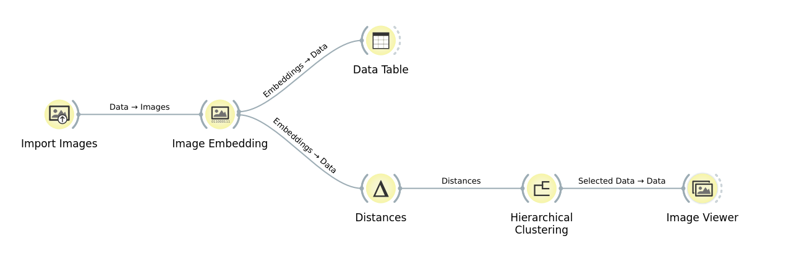

오렌지 연습하기·회귀분석 해보기에서는 정답(target)이 있는 데이터로 "예측하는 식"을 만들었어. 이번엔 반대야 — 정답을 하나도 안 알려주고, 실제 포켓몬 공식 아트워크 이미지 125장을 컴퓨터가 스스로 비슷한 것끼리 묶게 해볼 거야. Import Images → Image Embedding → Data Table / Distances → Hierarchical Clustering → Image Viewer, 전부 실제 Orange3를 실행해서 캡처한 화면이고, 이미지에는 이름표를 전혀 붙이지 않아서 오렌지 화면에 보이는 그대로 파일 이름만 표시돼.
회귀분석은 지도학습(supervised learning)이었어 — "무게로 체력을 맞혀봐"처럼 정답(target)을 미리 알려주고 식을 학습시켰지. 군집분석(clustering)은 비지도학습(unsupervised learning)이야. "이건 몇 번 그룹이야"라는 정답을 아예 안 줘. 대신 컴퓨터가 데이터끼리 서로 얼마나 비슷한지만 보고 스스로 무리를 지어.
선생님 컴퓨터에 있던 포켓몬 공식 아트워크 이미지 897장 중에서 균등한 간격으로 골라낸 125장이야. 이름표나 종류 같은 정보는 전혀 주지 않았고, 파일 이름도 도감 번호와는 무관해 — 오렌지 화면에 실제로 보이는 것처럼 파일 이름 그대로(예: "0 (105)") 표시할 거야. 아래는 그중 8장의 샘플이야.
지금까지 연습한 6단계를 모두 연결하면, 실제 오렌지 캔버스는 이런 모습이 돼. Import Images에서 시작해 Image Embedding을 거친 뒤 Data Table과 Distances 두 갈래로 나뉘고, Distances → Hierarchical Clustering → Image Viewer로 다시 합쳐져. (아래는 실제로 Orange3를 실행해서 캡처한 캔버스 화면이야.)
